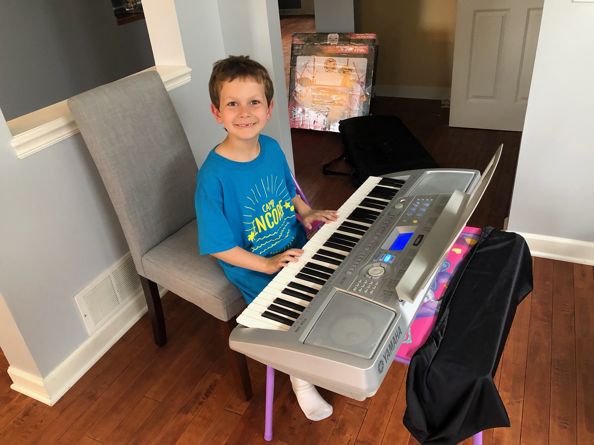
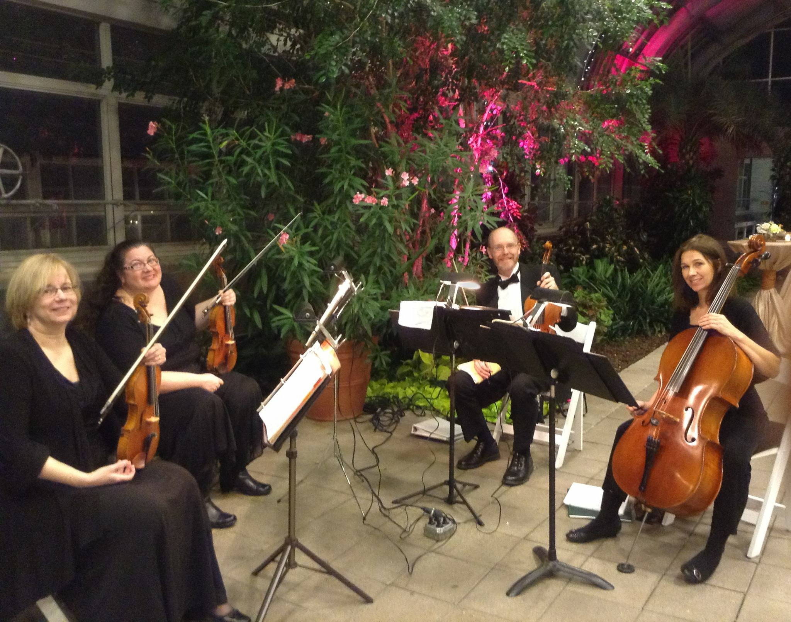

Be healthy. Music gives me a high like cocaine or other drug stimulant, but naturally. Nothing beats the rush of coming off a gritty practice session, and the effects will last if repeated over time.
Studies have shown listening and learning music stimulates multiple areas of the brain in both hemispheres. The skills learned through the musical process are applicable in other areas of our lives. Many famous mathmaticians were also serious amatuer musicians.
While it's never too late to put music into your life, studies have shown that early childhood exposure create healthy outlets for emotional and cognitive development.

I grew up with more instruments in the house than furniture. Piano studies with my father began at age 3. I picked up the viola and violin at age 10 and have been playing on a professional level since my late teens. I love playing classical music, but also enjoy Irish, Folk, Jazz & Blues genres. My String Quartet, "Stratford Strings", performs regularly throughout Chicagoland.
